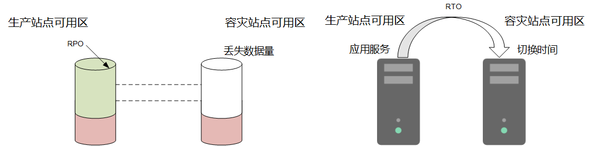
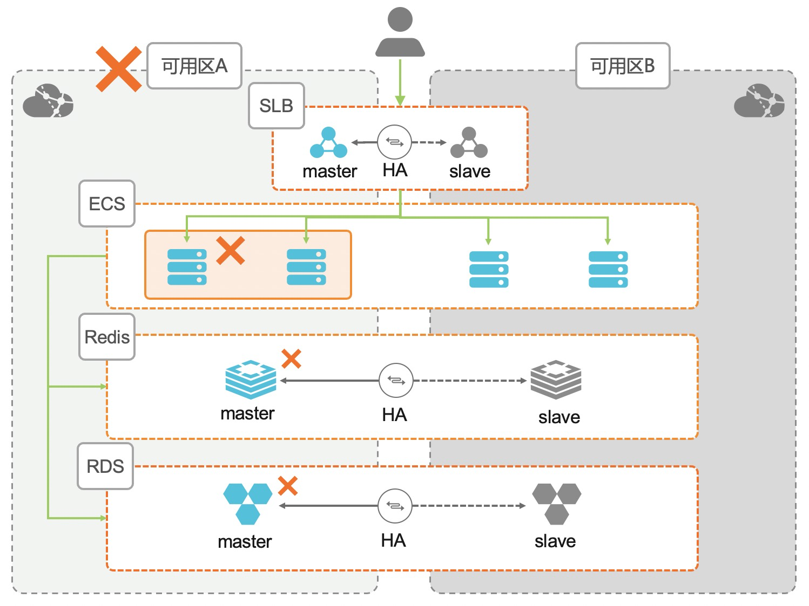
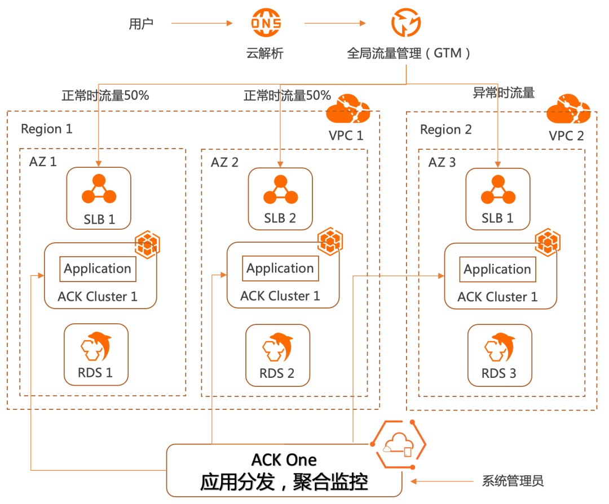
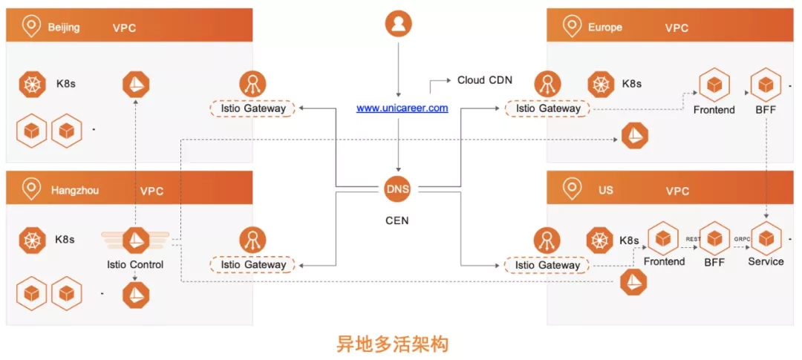
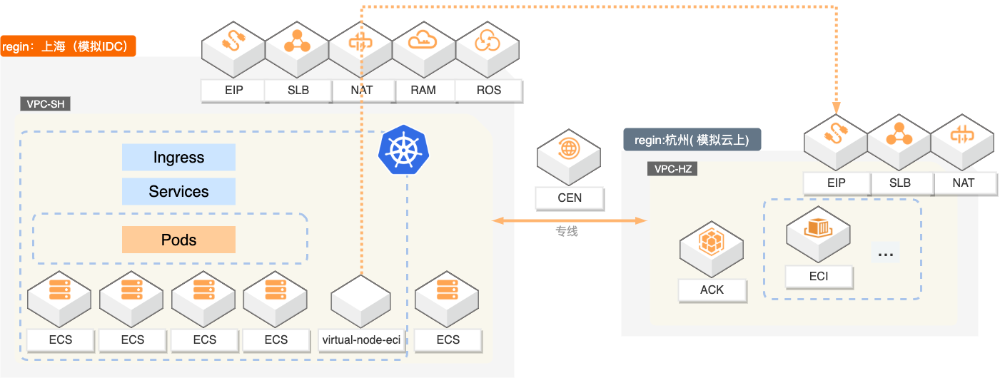
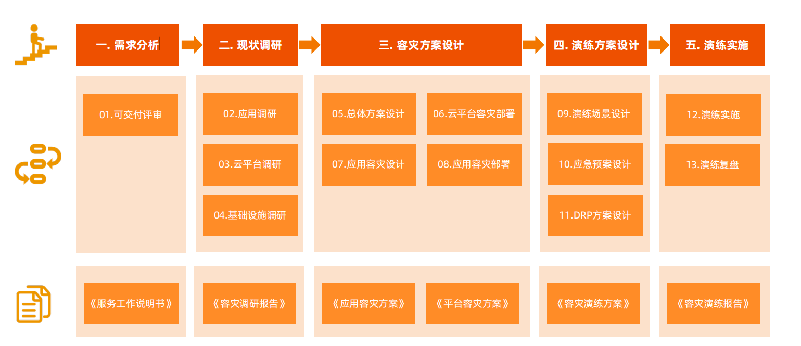

云上容灾交付
名词概念
- RPO（Recovery Point Objective）即数据恢复点目标，主要指的是业务系统所能容忍的数据丢失量。
- RTO（Recovery Time Objective）即恢复时间目标，主要指的是所能容忍的业务停止服务的最长时间，也就是从灾难发生到业务系统恢复服务功能所需要的最短时间周期。
云上容灾交付架构

同城架构容灾
同城容灾架构指在同城或相近的区域内，基于两个数据中心开展业务连续建设的技术架构,该架构的主要特点包括：
- 两个中心属于一朵云架构
- 生产中心提供信息系统完整功能，灾备中心至少提供信息系统的关键功能
- 可通过全局负载均衡或域名服务提供业务流量管理
- 应用层支持双活和应用层主备两种模式
- 数据层面看，为了保持数据一致性，采用主备访问模式

两地三中心容灾架构
两地三中心架构，是业界比较通用的叫法，是同城容灾架构 + 异地容灾架构的组合。通常同城的两个数据中心采取同步 / 异步的数据同步方式，同城和异地之间采取异步的数据同步方式。该架构既可以应对城市内单中心的灾难，又可以应对城市级的灾难。
该架构的主要特点包括：
- 三个中心属于两朵云架构，同城的两中心属于一朵云，异地的一个中心属于另一朵云，默认两朵云之间，网络隔离，资源隔离，涉及跨云访问的网络，需要开通权限
- 同城两个中心应提供信息系统的完整功能，异地一个中心应至少提供信息系统的关键功能
- 可以通过域名服务DNS，来提供业务流量的管理
- 从网络层看，同城的两个数据中心可采取流量双活模式，同城和异地之间则采用流量主备模式。
缺点： - 灾备中心平时不提供服务，在切换到灾备中心前，无法确定是否可以成功恢复业务系统的运行。
- 灾备中心平时不提供服务，灾备资源会处于闲置状态，资源闲置率较高。
- 平时提供服务的生产中心在单地域，当业务体量的规模接近生产中心资源上限时，无法解决单地域资源瓶颈的问题。

异地多活架构
“异地多活”，又称“应用多活”，是以应用为中心的云原生容灾架构。多活是容灾技术的一种高级形态，指在同城或异地数据中心，建设一套与本地生产系统部分或全部对应的生产系统，所有数据中心内的信息系统同时对外提供服务。当灾难发生后，多活管理系统可以在分钟级内实现业务流量切换，用户可能都不会感受到灾难发生和容灾切换的过程。阿里云的“同城多活”和“异地多活”，都是典型的应用多活的实现技术。该架构定位是一套支持跨地域、跨平台的通用多活方案，该架构的主要特点包括：
- 业务流量多活（BFA，business flow active）：应用多活的视角是业务，多活容灾系统具备按业务特征进行生产流量的精细化调配。
- 同城多活（LRA，local region active）：应用是分布式系统的最小服务集合，当主中心出现问题进入容灾态时，要具备全局或局部应用的多活切换能力。
- 异地多活（UDA，ultra distance active）：在超远距离（建议数据中心距离≥ 100km）时，业务系统仍具备较好的访问性能。进入容灾态时，RTO 和 RPO 在分钟级

混合云多活
向上对业务屏蔽容灾细节，提供统一的多活编程范式；向下对云平台技术保持兼容，支持公共云、私有云、托管私有云、边缘计算节点等不同部署模式的多活场景。

交付标准化参考框架
容灾是一个系统化、体系化的工程，通常会覆盖分析、规划、设计和实施环节。项目是否成功、是否达到设计目标，需要多种手段进行分阶段管理和衡量。通过容灾演练来验证容灾建设效果是最直接有效的手段，只有成功的演练才能最好地证明设计和交付的正确性。但同时，容灾演练是具有较大风险的过程，稍有闪失可能导致业务或数据损失。
为了保证容灾演练的成功和灾难恢复预案的有效性，本文结合多个项目的交付经验，总结出一套适合容灾项目交付的标准化参考框架，称之为“五阶十三步”。
五阶： 面向管理人员，标记交付过程的关键里程碑，并定义出容灾项目分阶段的验收范围，包括：需求分析、现状调研、容灾方案设计、演练方案设计、演练实施。
十三步：面向技术人员，定义出每个阶段的关键技术动作，方便不同的技术人员有相同的标准化流程可遵循，包括：可交付评审，应用调研，云平台调研，基础设施调研，总体方案设计，云平台容灾部署，应用容灾设计，应用容灾部署，演练场景设计，应急预案设计，DRP 方案设计，演练实施，演练复盘。
